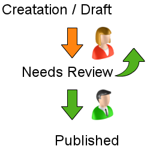
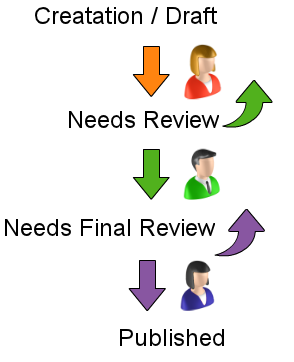

Does your organization require content review before the content gets published? We’ll build a common editorial workflow that allows an author to create and edit his or her own work and submit it for editorial review. Author and editor can collaborate until it’s ready to be passed along for final approval and publication.
With just two roles, we make use of Workbench access out of the box.
Adding a publisher lets us look at how to define new states, transitions, and views.
Drush users:
drush dl ctools views workbench workbench_moderation diff
drush en ctools views workbench workbench_moderation -y
People > Permissions
We’re working with three pre-created users, each of whom is assigned to one of the three pre-created roles that will be used in the workflow. Creating users and roles is routine, but permissions are one of the trickiest things to get right when creating a workflow, so we’re working through that together.
Cathy Contributor
Eli Editor
Peggy Publisher
Before setting up the second layer of permissions provided by Workbench Moderation, we’ll set the basic node permissions. These settings are based on the premise that no site content is ever deleted. During development, you might choose to allow the deletion of content.
| Permission | Contributor | Editor | Publisher |
|---|---|---|---|
| View own unpublished content | [√] | [√] | [√] |
| View content revisions | [√] | [√] | [√] |
| Revert content revisions | [ ] | [√] | [√] |
| Delete content revisions | [ ] | [ ] | [ ] |
| Article: Create new content | [√] | [√] | [√] |
| Article: Edit own content | [√] | [√] | [√] |
| Article: Edit any content | [ ] | [√] | [√] |
| Article: Delete own content | [ ] | [ ] | [ ] |
| Article: Delete any content | [ ] | [ ] | [ ] |
| Basic page: Create new content | [√] | [√] | [√] |
| Basic page: Edit own content | [√] | [√] | [√] |
| Basic page: Edit any content | [ ] | [√] | [√] |
| Basic page: Delete own content | [√] | [ ] | [√] |
| Basic page: Delete any content | [ ] | [ ] | [√] |
Configuration > Workbench: Workbench Moderation
We will start by using the default states provided by Workbench Moderation and later add new ones. The labeling of states is tricky business since the contributor chooses a state before it’s been applied and everyone else sees the state afterward. In general, it’s best to choose the label that makes the most sense after it has been applied, e.g., Published instead of Publish.
Structure > Content types > Article: edit
People > Permissions
At the bottom of the modules page:
Workbench
| Permission | Contributor | Editor | Publisher |
|---|---|---|---|
| Administer Workbench settings | [ ] | [ ] | [ ] |
| Access My Workbench | [√] | [√] | [√] |
Workbench Moderation
| Permission | Contributor | Editor | Publisher |
|---|---|---|---|
| View all unpublished content | [ ] | [√] | [√] |
| Administer Workbench Moderation | [ ] | [ ] | [ ] |
| Bypass moderation restrictions | [ ] | [ ] | [ ] |
| View moderation history | [√] | [√] | [√] |
| View the moderation messages on a node | [√] | [√] | [√] |
| Use “My Drafts” workbench tab | [√] | [√] | [√] |
| Use “Needs Review” workbench tab | [ ] | [√] | [√] |
| Moderate all content from Draft to Needs Review* | [√] | [√] | [√] |
| Moderate all content from Needs Review to Draft | [ ] | [√] | [√] |
| Moderate all content from Needs Review to Published | [ ] | [√] | [√] |
*Configuration > Workbench: Workbench Moderation > Check permissions (tab)
Workbench has a great feature to help ensure you’ve set up your transitions properly.
Home
We’re going to set up in two separate browsers, once for Cathy Contributor and one for Eli Editor so that we can watch as content progresses through the workflow.
My Workbench > Needs Review (tab)
Workbench > My Drafts*
Cathy Contributor can move her work from Draft to Needs Review in three places:
Her work will be visible to no one but an administrator until she moves it to the Needs Review state.
My Workbench > Needs Review (tab)
My Workbench
Configuration > Workbench: Workbench Moderation
On the main screen, add a state:
Name: Needs Final Review
Description: Ready for Publication
Arrange them in order by using the grabber.
Save
When you save, you’ll see the following warning: Depending on the changes you have made it may be necessary to reconfigure Views that leverage Workbench Moderation such as workbench_moderation. Part 5 will address the customizations necessary to take advantage of our new state.
Configuration > Workbench: Workbench Moderation: Transitions (tab)
Next we define the new transitions. Move to the Transitions tab and:
People > Permissions
Set the new permissions.
Workbench Moderation
| Permission | Contributor | Editor | Publisher |
|---|---|---|---|
| Moderate all content from Needs Review to Needs Final Review | [ ] | [√] | [√] |
| Moderate all content from Needs Final Review to Needs Review | [ ] | [ ] | [√] |
| Moderate all content from Needs Final Review to Published | [ ] | [ ] | [√] |
Structure > Views > workbench_moderation: edit
Since we added our own state, we’ll need to create another tab that is visible to the Publisher.
Home
My Workbench > Needs Review (tab)
My Workbench > My Drafts
Extend your understanding by working on one of the following:
If this workflow is exactly what you need, consider:
If this workflow doesn’t meet your needs, design one that does.